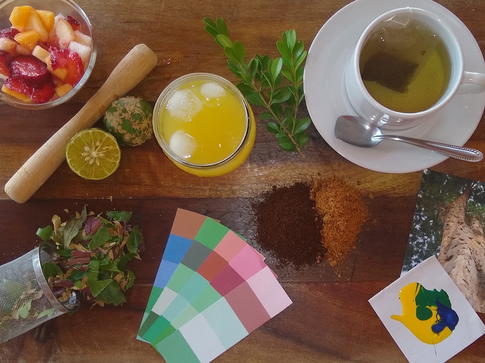
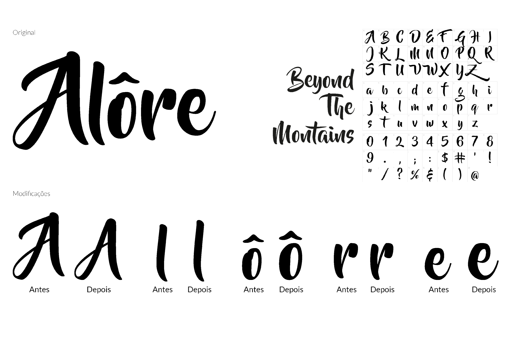
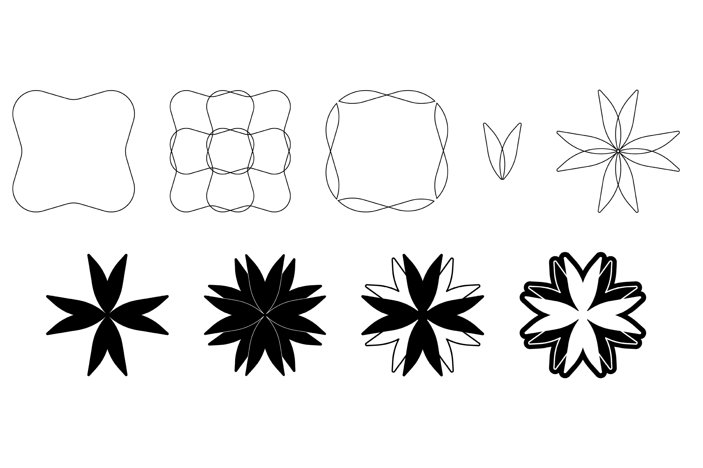
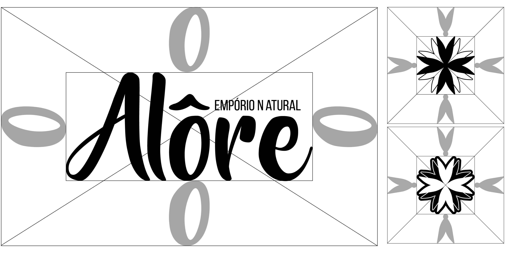
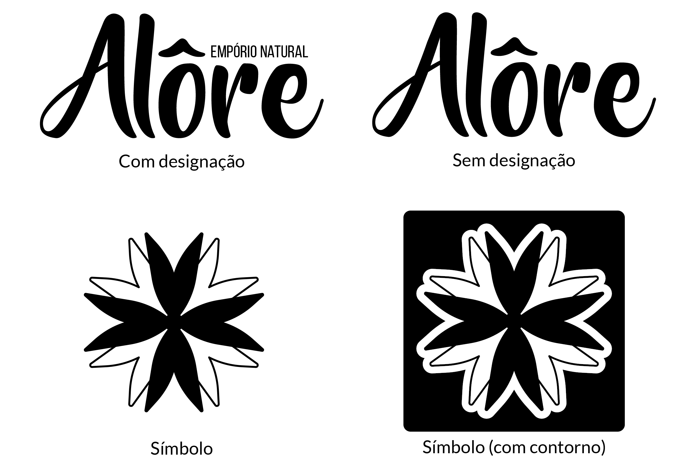

Identidade Visual: Alôre Empório Natural
Este trabalho visa aplicar todas as habilidades que adquirimos ao longo do curso. Nele, criamos a identidade visual de uma loja fictícia, trabalhando em estreita colaboração com um cliente que nos apresentou uma ideia. A partir dessa ideia, desenvolvemos todo o projeto de identidade da loja, incluindo ilustração e design digital.
O projeto foi concebido e executado por Isabele Santos Scherdien, sob a orientação de Ruth Lerm e Augusto Gowert.
Sobre a Alôre
A Alôre é uma loja inovadora que se dedica a trazer bebidas locais, brasileiras e saudáveis para seus clientes. Além disso, oferece uma variedade de artigos para a produção de bebidas. A empresa está comprometida em mostrar aos consumidores as inúmeras possibilidades que o Brasil oferece e deseja que se sintam mais conectados com a terra.
Através da venda de bebidas locais, a Alôre busca promover a cultura e a tradição brasileira, enquanto incentiva o consumo consciente e saudável. Com isso, a empresa espera tornar-se referência no setor de bebidas, destacando-se pela qualidade dos seus produtos e pelo compromisso com a sustentabilidade e a responsabilidade social.
Análise de concorrentes
O logotipo do Quintal - Mercado Saudável comunica claramente o que a loja representa. Com um design em verde e tipografia cursiva, o logotipo é geralmente usado em fundo branco ou marrom. As cores foram escolhidas para refletir a natureza saudável dos produtos vendidos na loja.
O logotipo da Greenpeople é uma representação clara e direta da marca. Com um design limpo e simples, a tipografia é o ponto focal, acompanhada por um símbolo verde que evoca a imagem de uma planta. O logotipo enfatiza a palavra "green", já que o propósito da marca é transmitir a ideia de produtos saudáveis.
O logotipo da NONA pode não ser imediatamente claro em relação ao que a marca representa. O design é predominantemente tipográfico, com o uso da lei do fechamento em alguns momentos. O logotipo apresenta formas meio pontiagudas, mas não transmite agressividade. A cor predominante do logotipo é o preto, acompanhado por um fundo branco.
Estudo da empresa: Moodboard
Personas


Naming
Após realizar diversas pesquisas e estudos sobre o conceito, cheguei à conclusão de que o objetivo principal é comercializar produtos que sejam originários da nossa região, enraizados em nossa cultura e história. Embora tenha buscado diversas palavras e até mesmo feito referência à cana de açúcar, nenhuma delas parecia realmente adequada.
Para encontrar uma opção que realmente representasse nossa identidade, decidi pesquisar na língua Tupi Guarani e encontrei a palavra "Alôre", que remete diretamente à nossa terra.
Marca: Tabela semântica

Marca: Modificações
Processo: Símbolo
Positivo e Negativo
Área de segurança
Assinatura
Por que essas cores?
O nome da cafeteria, "Cyber Space", faz referência ao universo da ficção científica e ao espaço sideral. Por isso, uma das cores que mais representa esses conceitos de forma poética e atraente é o roxo.
Essa cor é amplamente utilizada no tema "Cyber", especialmente em jogos eletrônicos retro, que são muito apreciados pelos Geeks. Além disso, o roxo é frequentemente associado à eletricidade, o que combina perfeitamente com a atmosfera tecnológica da cafeteria.